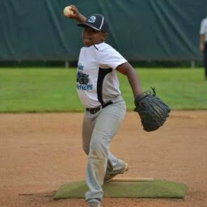
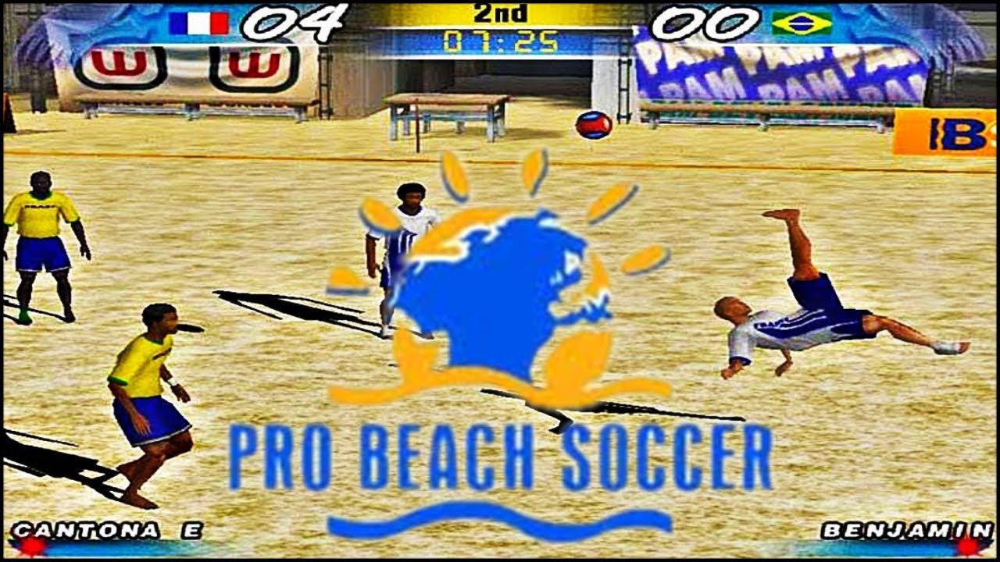
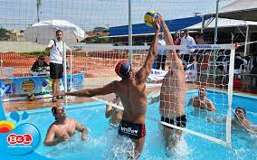
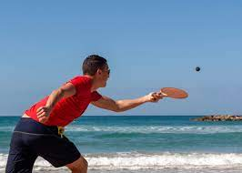

Tão antigos quanto o homem, os esportes são uma das invenções mais benéficas do
homem. Além de manter o corpo saudável, ainda auxiliam na criação de uma série
de comportamentos positivos, como a humildade, a união, a empatia, dentre outros.
E os esportes com bola são, sem nenhuma dúvida, os mais populares. Mas você sabe
a diferença entre alguns deles? É justamente isso que iremos descobrir abaixo.
| Esporte | Origem | Ambiente | Objetivo | Equipe | ||
|---|---|---|---|---|---|---|
| 1 |  | Baseboll | EUA, 1971 | Campo com 1/4 de círculo, de 92 a 108,2m de raio | Realizar o maior número de corridas | Nove jogadores em cada time. |
| 2 |  | Beach soccer | 1930, Brasil | Quadra de areia com 35 ou 37 m x 26 ou 27 de largura. | Realizar gols no campo adversário | Cinco jogadores em cada time. |
| 3 |  | Biribol | 1968, Brasil | Piscina com 4 x 8 x 1,3m. | Derrubar a bola na quadra adversária | 2 a 4 jogadores por time |
| 4 |  | Frescobol | Brasil, 1946 | Ao ar livre | Manter a bola no ar pelo maior tempo possível | Geralmente um contra um |
Saiba mais acessando o link